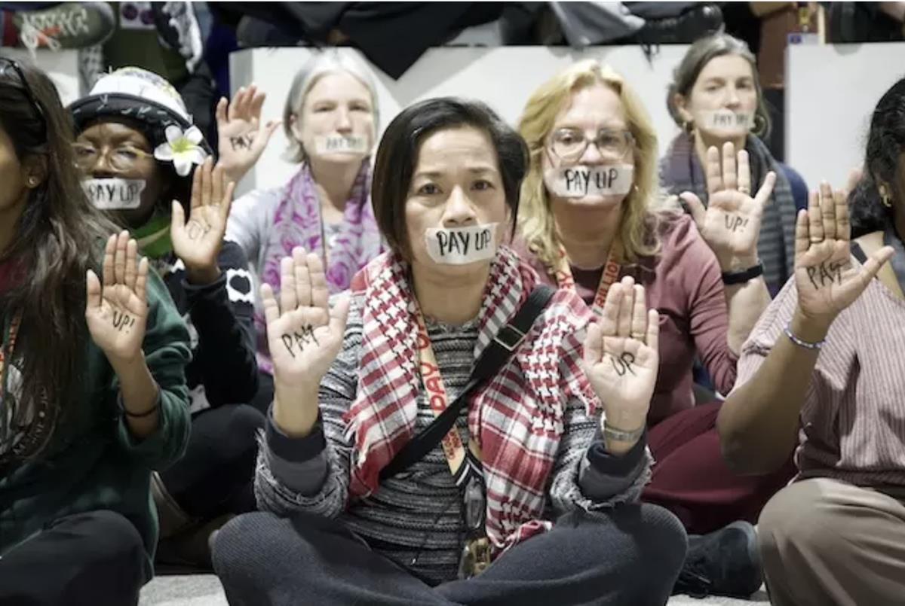

State-sanctioned media at a kiosk in Central Baku, 24 November 2024. (Paula Dupraz-Dobias)
ON SOURCE: GENEVA SOLUTIONS
HUMAN RIGHTS Cop29 ACTU Published on November 29, 2024 05:02. / Updated on November 29, 2024 08:51.
Whispers, self-censorship and crackdowns on free speech prevailed at Cop29
For civil society organisations and media, including representatives of local independent outlets, Azerbaijan’s hosting took restrictions on freedom of expression to a whole new level, leaving questions to be asked about the organisation’s duties to uphold rights at the event.
BAKU – For the third year in a row, the Cop29 climate conference was held in an authoritarian petrostate, undermining how effective climate outcomes could be within that context. But even for regulars to the yearly Cop events, it was clear that government repression of its domestic critics had not only tightened during the two weeks, but also permeated the venue’s Olympic Stadium.
Many participants condemned the incongruity of hosting the talks in a fossil fuel nation, which they blame for “chaotic”, “disappointing, and even “the worst ever” talks, where the presidency cut out representatives of vulnerable populations and developing countries, while prompting many participants to self-censor under the peering eyes and ears of the authoritarian host.
Calls for a major reform of the climate talks were made half-way through the event by senior international leaders, who lamented the lethargic process and argued it should be paired down to deliver more urgent results, with more involvement from civil society.
Myrto Tilianaki, environment and human rights advocate at Human Rights Watch said that operating within a repressive government meant that “instead of doing a job of keeping governments accountable” and pressuring leaders to achieve more ambitious climate outcomes, “civil society has been spending an incredible amount of time and energy trying to understand what we can or cannot say and what repercussions we may face.”

Civil society activists in the United Nations’ Blue Zone at the COP29 were told not to chant during protests in certain areas of Baku’s reappointed Olympic Stadium, a first at the annual climate conferences. (Geneva Solutions/Paula Dupraz-Dobias)
Rights defenders told Geneva Solutions of being filmed by what they believed were plainclothes agents and security guards in the vast Blue Zone, the area inside the venue where formal sessions and meetings take place and formally under UN authority. Tilianaki said activists avoided using the host country name or terms such as dictatorship in conversations, to avoid unwarranted attention, something he said they had never experienced before at a climate Cop.
Read more: Rights and wrongs ahead of Baku’s Cop29 hosting
“If these places exclude these actors and voices, then one has to wonder what types of policies will be adopted at the end of the day,” Tilianaki reflected. “Whose realities will they reflect and will they be able to sufficiently protect the rights of the very people that these (conferences) are aimed to protect?”
State of repression
In September, Elnur Soltanov, Cop29 chief executive, told Geneva Solutions at a security conference in Prague, when asked about the role of civil society at the upcoming conference: “We are involving both international and domestic civil society. Without them, there is no climate discussion, and without the nice and constructive pressure they put on everybody, I think we would be losing a lot of momentum.”
Independent civil society groups are practically unheard of in the country, according to Emin Huseynov, an exiled Azeri journalist and human rights activist.
The families of over 300 people now in detention on politically motivated charges would disagree with Soltanov on Baku’s proclaimed interest in engaging with civil society. Journalists have been among the most intensely repressed. Since late 2023, when the Cop29 hosting was announced, at least a dozen reporters have been arrested on trumped up charges.
Reporters Without Borders (RSF) ranks Azerbaijan amongst the worst countries on press freedom, at 154th out of 180 countries on its list.
Khagan Babali, the son of Hafiz Babali, an investigative journalist arrested last December for his reporting, told Geneva Solutions that prison conditions for him have been “harsh”. Already blind in one eye, he said his 53 year-old father risks losing sight in the other without medical care. The denial of medical treatment to detainees held for publishing articles critical of the government is a common practice in the country, according to rights organisations and interviews with families of detainees. Meanwhile, with potential employers prohibited from offering Babali’s family work, Khagan said they struggle to provide enough food and medicine for his father.
“For my father and his colleagues, Cop29 didn’t bring positive tangible relief, but instead highlighted attempts to silence critical voices,” Khagan Babali told Geneva Solutions by phone. During Cop, the duration of his phone call with his father was cut from 15 minutes to two minutes and he said that although he was able to meet with his father, he learnt that family visits for other political prisoners were curtailed.
Babali was just one of several journalists from investigative outlet Abzas Media arrested in police roundups. Detained colleagues of his reportedbeing subjected to physical violence during the first week of the climate talks.
Barring local coverage
Some of the Azerbaijani state-controlled media outlets in the Cop29 media centre in Baku, 19 November 2024. (Geneva Solutions/Paula Dupraz-Dobias)
With the most outspoken Azeri journalists behind bars, a multitude of state-controlled television networks were assured outsized coverage of Azeri government officials and a large part of the reserved broadcasters’ area in the media centre.
Turan news agency’s director, Mehman Aliyev, however, told Geneva Solutions, that while his media was granted access to the Cop29, they hadn’t been invited to official pre-conference briefings. “This indicates a high-level decision, likely from the presidential administration, to block Turan. For Cop29, we were allowed access. However, this is an international event, partially controlled by the state, so they couldn’t impose an embargo against us without causing a scandal.
Read more: Journalists in Azerbaijan ‘are operating on cruise control’, says formerly imprisoned media boss
Four journalists from Meydan TV, a prominent Azeri independent media tried to apply for Cop29 accreditation but were denied credentials for failing to provide signed examples of their reporting. Matt Kasper, the Berlin-based director of an NGO that runs Meydan TV, explained that stories are not signed to protect the outlet’s journalists.
“It should be in the vested interest of the UN that independent media are present at these events,” he said. “There should have been a plan to ensure that independent journalists are able to apply as it is nothing new that the press freedom situation in Azerbaijan is very bad,” he added.
A copy of the bilateral hosting agreement between Azerbaijan and the secretariat of the UN Framework Convention on Climate Change, leakedby Human Rights Watch, revealed few assurances for the protection of civil society participants and free speech. Tilianaki explained that host agreements are only made public upon request six months after Cop events.
RSF condemned the non-accreditation of the Meydan TV journalists from the event. “The fact that they refuse to allow journalists because they couldn’t sign their articles is a completely unfair and incomprehensible restriction given the dangerous working conditions of independent journalists in authoritarian states,” Jeanne Cavelier, head of RSF’s eastern Europe and central Asia desk, said. “There are other means for the UN to check that a journalist works for a media outlet, so it can't be an excuse to prevent them from covering the Cop events.”
UNFCCC did not reply to multiple requests to comment for this article.
Foreign journalists on alert
Although over 3,500 journalists were reportedly accredited, many international correspondents at Cop29 could feel pressured to self-censor.
Global newsrooms covering the conference left critical reporting to desk reporters away from the field or avoided using datelines with reporters’ names, to protect journalists in Azerbaijan. Since the end of the conference and departure of foreign journalists, however, news stories deemed sensitive, have begun to see their day.
Meanwhile, for the families of those who remain behind bars in Azerbaijan, the end of the two-week conference filled them with trepidation. “I think this repression may intensify and get worse, because often after high profile events, the oppression will be on the activists, in order that (the state) can maintain stability and protect its image,” Khagan Babali said.
“We are still positive that they will retract from their decision and free them all because they didn’t commit any criminal offenses,” he added optimistically, ahead of court hearings that he said were expected for upcoming court hearings by early December.
Cop29 Azerbaijan Freedom of expression
ON SOURCE: GENEVA SOLUTIONS